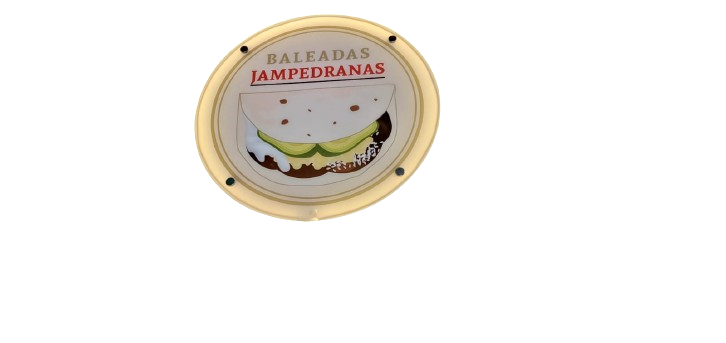

BALEADAS JAMPEDRANAS
"Bienvenido a Baleadas Jampedranas"
"Baledas Jampedranas" es un negocio que ofrece deliciosas baleadas, una especialidad de la cocina hondureña. Con un enfoque en ingredientes frescos y sabores auténticos, este establecimiento busca brindar a sus clientes una experiencia culinaria tradicional con un toque local.
Menú
Baleada con carne de res
Tortilla de harina, Huevo Y Huevo
L32.00
Baleada con carne de res
Tortilla de harina y Huevo
L30.00
Baleada con carne de res
Tortilla de harina y Aguacate
L28.00
Baleada con carne de res
Tortilla de harina y carne de res
L25.00
Baleada con pollo
Tortilla de harina,Huevo y aguacate
L30.00
Baleada con pollo
Tortilla de harina,Huevo
L28.00
Baleada con pollo
Tortilla de harina, aguacate
L26.00
Baleada con pollo
Tortilla de harina y pollo
L23.00

Baleada con Cerdo
Tortilla de harina,costilla huevo y aguacate.
L45.00
Baleada con costilla
Tortilla de harina,costilla y huevo.
L45.00
Baleada con costilla
Tortilla de harina,costilla y aguacate.
L45.00
Baleada con costilla
Tortilla de harina,costila de serdo frita.
L45.00

Baleada con Huevo
Tortilla de harina, huevo y aguacate.
L24.00
Baleada con Huevo
Tortilla de harina, huevo.
L21.00
Bebidas
café negro (por las mañanas).
L12.00
Bebidas
café con cremora (por las mañanas).
L12.00
Nuestra Misión
Ofrecer a nuestros clientes una experiencia culinaria auténtica y memorable mediante la preparación de baleadas jampedranas de alta calidad. Nos comprometemos a utilizar ingredientes frescos y locales, seguir métodos tradicionales de preparación, y brindar un servicio amable y eficiente. Nuestra misión es celebrar y compartir la rica herencia gastronómica de Jampedrana, mientras contribuimos al bienestar de nuestra comunidad y fomentamos el aprecio por la cocina local.
Nuestra visión
Ser el referente principal en Jampedrana y sus alrededores para la auténtica baleada jampedrana, ofreciendo una experiencia culinaria que celebra la tradición y la calidad. Nuestro objetivo es expandir el reconocimiento de nuestra marca a nivel regional, destacándonos por la excelencia en la preparación y el servicio, y contribuyendo al desarrollo de la comunidad local mediante el uso de ingredientes locales y prácticas sostenibles.
Servicios
Servicio en el establecimiento
En nuestro establecimiento, ofrecemos baleadas jampedranas artesanales, preparadas con ingredientes frescos y locales. Nuestras baleadas se destacan por su sabor auténtico y su preparación tradicional, con opciones variadas de rellenos como queso, frijoles, carne y vegetales, además de salsas caseras.
Valor para los clientes
Nuestro servicio es valioso porque brinda una experiencia gastronómica auténtica y deliciosa, representando la tradición culinaria local. Al usar ingredientes de alta calidad y técnicas tradicionales, garantizamos una comida sabrosa y satisfactoria que honra la cultura gastronómica de Jampedrana. Además, al ser un negocio local, ofrecemos un trato personalizado y un ambiente acogedor para disfrutar de nuestras baleadas
Contacto
Para más información, no dudes en contactarnos:
- Email: baleadasjampedranas@gmail.com
- Teléfono: 3262-3052
- Dirección:Frente a la plaza, El Paraiso, Honduras